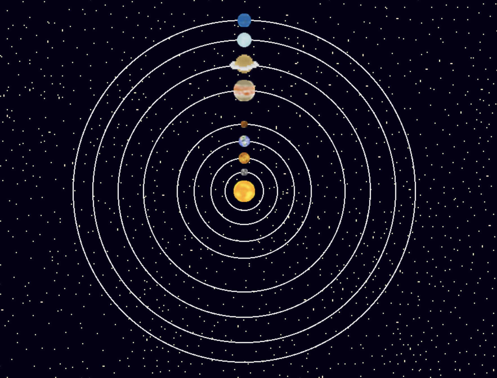

I have found another API that I could possibly use called Ephemeris API. Seems alot easier to use compared to Astrology API or NASA API.
Here is the documentation: https://astrologyapi.docs.apiary.io/#
After reading the documentation, I realize every API I have found so far isn't really about Astronomy as I'd hoped. They're all about Astrology. I may unfortunately have to scrap the accurate planetary location part of this project.
I have scrapped the accurate planetary location and am looking to make the planets static in the scene.
I have made 32x32 pixel art of all the planets + the sun.
I changed the pixi version from 7 to 6 as image loading is not working.
I have now loaded all the images, and wrote LoadPlanets(), LoadOrbits(), StartGame(), and setup(). Currently nothing is moving, however it displays everything once the enter button has been clicked!
Dec 6, 2023
I got the rotation working! I added an update() method to the planet class, which calculates your location using sin and cos
added a variable to the Planet class called speed, so that I don't have to manually code each planet's speed in update()
added a property to the Orbit class called radius, which allows me to access a planet's orbit radius at any time.
Dec 7, 2023
added a planet name field and property (i dont know why i didnt do this before)
added LoadButtons, where it adds buttons for each planet on the left side. Added some utilities like BringToFront() where it brings the selected sprite on top of the canvas.
added ClearCurrentScene(), will be used later.
added functionality to the buttons, hovering over them will bring the planet to the top of the canvas, and temporarily increase the size of the planet.
Dec 14, 2023
added sound functionality using Howler! I created the main soundtrack, hovered, unhovered, and clicked audio! ISSUE: though sometimes I dont hear it, but there is never an error displayed about it
clicking on said planet will now call focused()!, it will display a picture and some information about said selected planet, and a NASA external link for more information.
Dec 15, 2023
Added a back button on the focused() planets, allowing users to go back to the solar system.
Unfortunately, using an API had to be scrapped. I was trying to get images from the NASA API but I have to call everything at the beginning, before images are loaded, which I would have to hard code all of it.
Instead, I hard coded all the information and had an external link for more. I had to hard code all my information, as there was a lot of information being passed in for each planet, and creating a function would make its constructor very long. Instead, I put everything in a switch statement.
Sources Used: